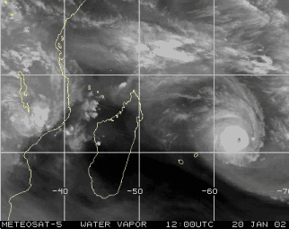

Après plus de 10 ans sans avoir connu de météo extrême, la Réunion a été frappée les 22 et 23 janvier 2002 par le Dina, un cyclone tropical intense qui a été la cause de nombreux dégâts dûs aux vents mais aussi des inondations et des éboulements causés par les pluies intenses.

Animation satellite enregistrée par Meteosat 5 montrant le passage du
cyclone tropical Dina à proximité de l’île Maurice et de la
Réunion entre les 20 et 23 janvier 2002.
Une photo satellite est prise toutes les 6 heures.
C’est l'île Maurice qui a le plus été touché par le cyclone Dina, Dina a fait au moins 3 morts. Son changement de trajectoire à l’approche de la Réunion, lui faisant contourner l'île a sûrement été salutaire pour les Réunionnais. En passant 25 km plus au sud, le centre du cyclone aurait heurté l’île de plein fouet et les vents auraient dépassé les 300 km.
Pour autant les réunionnais ont connu beaucoup de dégâts. Le mardi 22 janvier, le cyclone était à quelque 215 kilomètres de l’île, et le préfet passe le titre de l'alerte cyclonique à alerte rouge. Les rafales à plus de 100 km/h voir 120km/h sont enregistrés dès le matin à l'ouest de l’île. La pluie et le vent va s’amplifiant au cours de la journée et c’est la nuit de mardi à mercredi que le cyclone est le plus violent sur la côte occidentale de l’île. Le journal de l’île affirmait que « La Côte Occidentale N’avait Pas Connu Un Cyclone D’une Telle Intensité Depuis 30 Ans » Au plus fort de la tempête, les vents ont atteint les 220 km/h relevés à la Plaine des Cafres et il est tombé jusqu’à 2 018 mm en 72 heures dans les hauts.
Le littoral occidental a effectivement été le plus touché. Les routes coupées, arbres déracinés, toitures envolées ne se comptent pas. Les dégâts matériels sont énormes mais la Réunion ne déplore aucune victime. Il faudra néanmoins plusieurs semaines pour rétablir les communications avec les endroits les plus reculés de l'île. De nombreux foyers ont été privés de téléphone et d’électricité et d’internet pendant plusieurs jours.
La Réunion n’avait pas vu passer de cyclone depuis Hollanda, en février 1984. Depuis, les règles de construction, les modes de surveillance et la gestion des crises a beaucoup évolué. Le ministère de l’Environnement a donc demandé un rapport sur le sujet. Un an plus tard, Philippe HUGODOT et Pierre DUBOIS de l’inspection générale de l’environnement ont remis leur rapport intitulé Cyclone Dina à La Réunion les 22 et 23 janvier 2002 : caractérisation, conséquences et retour d'expérience.
Ce rapport pointe la part d’inadaptation des réglementations « neige et vent » NV65 et les eurocodes EN90 et EN99 et vérifie les normes et les pratiques locales de construction et analyse les lenteurs et les failles dans les Plans de Prévention des Risques. Il tente aussi de cerner les modes d'évaluation des dégâts et les modalités de mise en place des aides publiques.
Il est disponible à la documentation française (PDF).
Quand j'ai fabriqué cette image en 2002 en archivant la photo satellite du jour toutes les six heures, j'ai laissé un avertissement : L’image fait environ 550 Ko elle est donc longue à charger avant de voir l’animation. À cette époque l’internet haut débit n’était pas répandu et le chargement de ce gif était long. Les temps ont bien changé.